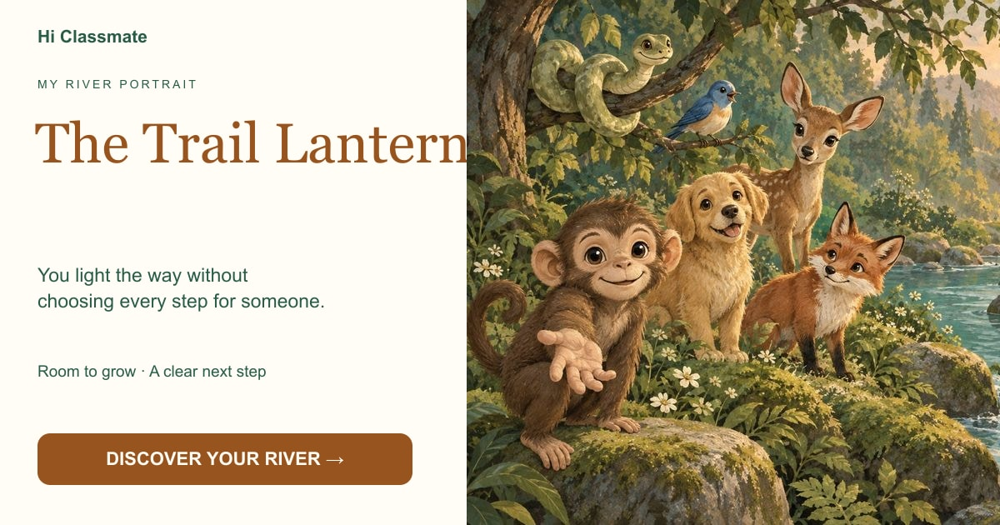

The Trail Lantern
You light the way without choosing every step for someone.

Your choices leaned toward personal space and practical action. You may show care by offering a direction, an invitation or a hand, while leaving others room to choose.
Begin my crossing →